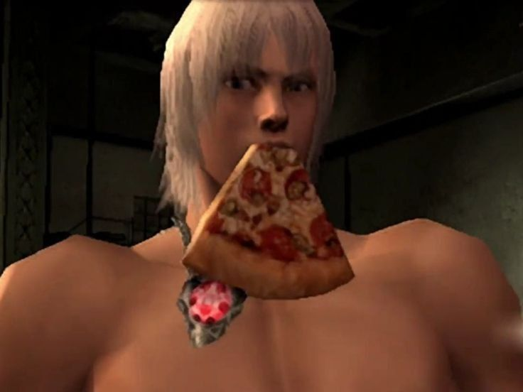
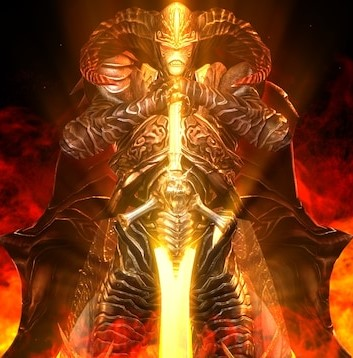
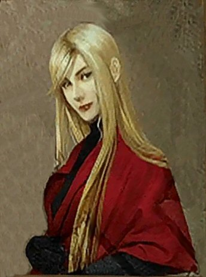
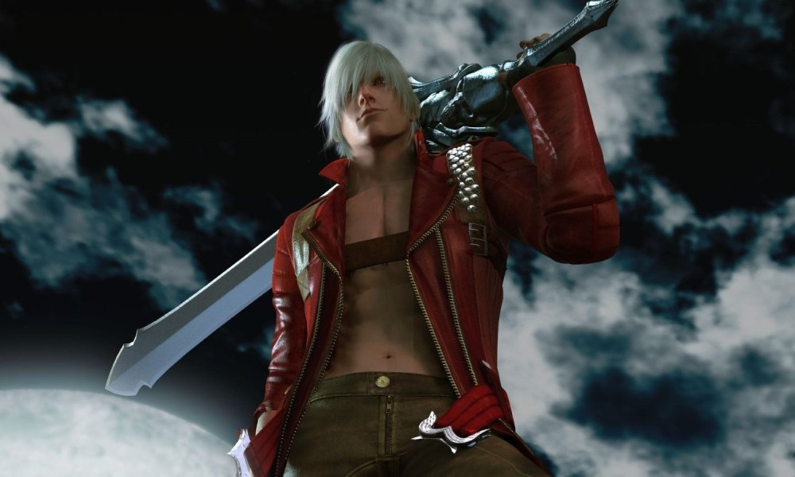

BIOGRAFIA
Dante Sparda
INDICE
- Vergil.
- Sparda.
- Eva.

Sobre Dante:
Dante
es un cazademonios, aunque, ironicamente, él también es un demonio, o más bien, mitad demonio.
Es uno de los dos hijos de Sparda, quien fué un demonio legendario que selló al inframundo para proteger a la humanidad y mantener la paz, aunque selló su poder demoniaco en el proceso.
Sparda logró escapar del inframundo, y antes de morir, se casó con Eva, quien dió a luz a los gemelos, Dante y Vergil.
Dante es el dueño de su propia compañia:
La cual consiste en aceptar trabajos para matar demonios y criaturas del mal.
En el día, el local se hace pasar por un simple kiosco para ocultarse en la vista del publico y Dante mismo se refugia tras un nombre falso: "Tony Redgrave".
Aunque en un inicio Dante comenzó el negocio en solitario, a lo largo de los años se le han unido más miembros, y más que miembros, son también sus amigos.
Familia:

Vergil:
Es el hermano gemelo de Dante, quien,en un ataque de demonios que fue comandado por Mundus, el rey del infierno, falleció, junto a su madre, Eva.
O, eso es lo que se cree...

Sparda:
Sparda es el padre de Dante y Vergil, gracias a el es que ellos poseen su mitad demonio. Sparda fué un general de Mundus, pero cuando participó en la invasión de la tierra, sintió compasión por los humanos y decidió traicionar a Mundus y lo derrotó sellando la puerta que unia el mundo humano con el demoniaco.

Eva:
Eva es la madre de Dante y Vergil, en el ataque de los demonios, ella murió ocultando a Dante en un closet y buscando a Vergil, pero nunca pudo encontrarlo.
Personalidad:
Dante es bastante frívolo, casualmente hablando con demonios más poderosos que el, y le gusta presumir y burlarse de sus adversarios, tanto como puede. Dante también es bastante intrépido y poco cuidadoso incluso en situaciones peligrosas.
